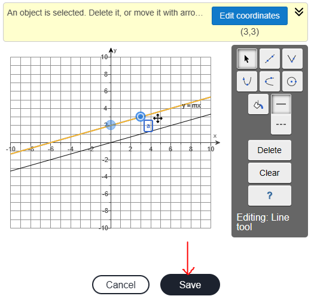
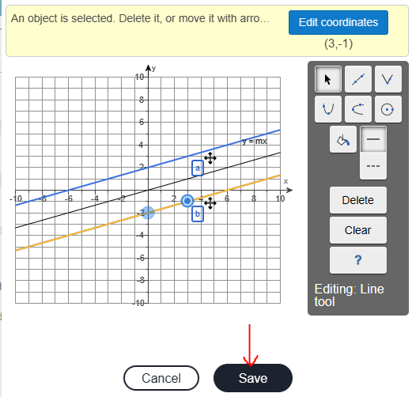
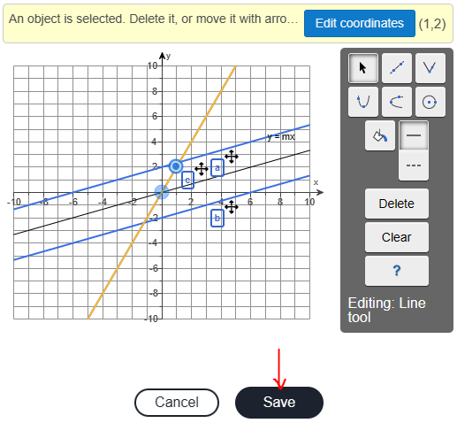
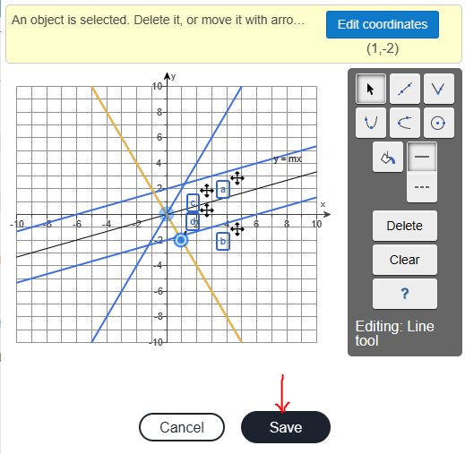
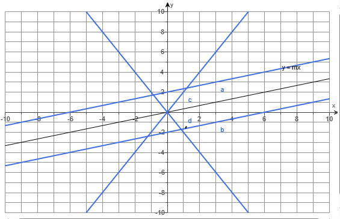

(55.) The graph of $y = mx$ is given below.
(a.) $y = mx + 2$; Explain this line in comparison to the original line.
(b.) $y = mx - 2$; Explain this line in comparison to the original line.
(c.) $y = 6mx$; Explain this line in comparison to the original line.
(d.) $y = -6mx$; Explain this line in comparison to the original line.
(e.) Sketch the graphs for (a.), (b.), (c.), and (d.) on the same figure and label each line using the letter of its part.
Use the graphing tool to graph the equations.
First: Let us get two points on the initial graph.
Second: Let us write the equation for the initial graph.
$
\underline{Initial\;\;Graph} \\[3ex]
Point\;1\;(-3, -1) \\[3ex]
x_1 = -3 \\[3ex]
y_1 = -1 \\[3ex]
Point\;2\;(3, 1) \\[3ex]
x_2 = 3 \\[3ex]
y_2 = 1 \\[3ex]
slope,\;m = \dfrac{y_2 - y_1}{x_2 - x_1} \\[5ex]
m = \dfrac{1 - -1}{3 - -3} \\[5ex]
m = \dfrac{1 + 1}{3 + 3} \\[5ex]
m = \dfrac{2}{6} \\[5ex]
m = \dfrac{1}{3} \\[5ex]
$
To graph a linear function using the graphing tools on MLM, two points are required.
$
(a.) \\[3ex]
y = mx + 2 \\[3ex]
y = \dfrac{1}{3}x + 2...same\;\;slope \\[5ex]
y-intercept:\;\;When\;\;x = 0 \\[3ex]
y = \dfrac{1}{3} * 0 + 2 \\[5ex]
y = 0 + 2 \\[3ex]
y = 2 \\[3ex]
y-intercept = Point\;1 = (0, 2) \\[3ex]
When\;\;x = 3 \\[3ex]
y = \dfrac{1}{3} * 3 + 2 \\[5ex]
y = 1 + 2 \\[3ex]
y = 3 \\[3ex]
Point\;2 = (3, 3)
$
The line is parallel to $y = mx$ and passes through the points: (0, 2) and (3, 3)

$
(b.) \\[3ex]
y = mx - 2 \\[3ex]
y = \dfrac{1}{3}x - 2...same\;\;slope \\[5ex]
y-intercept:\;\;When\;\;x = 0 \\[3ex]
y = \dfrac{1}{3} * 0 - 2 \\[5ex]
y = 0 - 2 \\[3ex]
y = -2 \\[3ex]
y-intercept = Point\;1 = (0, -2) \\[3ex]
When\;\;x = 3 \\[3ex]
y = \dfrac{1}{3} * 3 - 2 \\[5ex]
y = 1 - 2 \\[3ex]
y = -1 \\[3ex]
Point\;2 = (3, -1)
$
The line is parallel to $y = mx$ and passes through the points: (0, -2) and (3, -1)

$
(c.) \\[3ex]
y = 6mx \\[3ex]
y = 6 * \dfrac{1}{3}x \\[5ex]
y = 2x \\[3ex]
y-intercept:\;\;When\;\;x = 0 \\[3ex]
y = 2(0) \\[3ex]
y = 0 \\[3ex]
y-intercept = Point\;1 = (0, 0) \\[3ex]
When\;\;x = 1 \\[3ex]
y = 2(1) \\[3ex]
y = 2 \\[3ex]
Point\;2 = (1, 2)
$
The slope is 6 times the original slope, and the line passes through the points: (0, 0) and (1, 2)

$
(d.) \\[3ex]
y = -6mx \\[3ex]
y = -6 * \dfrac{1}{3}x \\[5ex]
y = -2x \\[3ex]
y-intercept:\;\;When\;\;x = 0 \\[3ex]
y = -2(0) \\[3ex]
y = 0 \\[3ex]
y-intercept = Point\;1 = (0, 0) \\[3ex]
When\;\;x = 1 \\[3ex]
y = -2(1) \\[3ex]
y = -2 \\[3ex]
Point\;2 = (1, -2)
$
The slope is −6 times the original slope, and the line passes through the points: (0, 0) and (1, −2)

(e.) The graphs for (a.), (b.), (c.), and (d.) on the same figure and their respective labels is:

 For ACT Students
For ACT Students